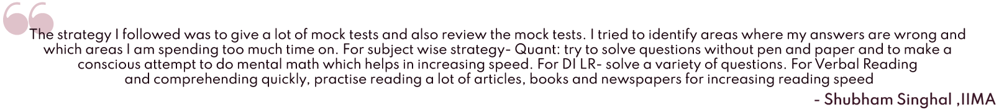

Everything about the CAT exam
If you are planning to apply for an MBA program, most B-Schools in India take CAT (Common Admission Test) scores and some take GMAT (Graduate Management Admission Test). Timeline for the CAT exam is given in flowchart-1:
Some pointers for CAT exam pattern are:
| Total marks | Total questions | Exam duration |
| 300 |
100
MCQ and Type-in the answer (TITA) |
3 hours of exam [morning or afternoon batch] |
Table-3
| Section 1 | Section 2 | Section 3 |
| Quantitative aptitude | Logical reasoning and data interpretation | Verbal ability and reading comprehension |
Table-4
- Third section of the test: Quantitative Aptitude- Have applicative problems from high school mathematics. In detail, topics can be found at this link
- Second section of the test: Data Interpretation and Logical Reasoning (DILR)
- Considered the most challenging section of CAT, is time-consuming and has confusing questions.
- Has 32 questions approximately
- Questions appear in sets of 4 for each subsection (i.e. DI and LR)
- Data Interpretation has questions based on direct data from tables/graphs with
- Logical Reasoning has questions based on blood relation, arrangements and combinations of topics.
- LR has a combination of MCQ and TITA.
- Note: This section usually puzzles candidates. But getting a high percentile in this section can be relatively easy. One only needs to solve 16 questions correctly to break into the 99 percentile bracket. Thus, it is also considered as a make-or-break section.
- First section of the test: (VARC) Verbal ability and reading comprehension
- Has 34 questions approximately
- Reading comprehension takes up to 70% of this section; there are usually five passages in this section with mostly MCQ and a few Type in the Answer (TITA).
- Verbal ability is a relatively small subsection containing questions on paragraph jumbles, summary questions and picking the odd sentence out.
Good time to start preparing?
While some start preparing as early as February, but an ideal time to start preparation is around the end of July. Most coaching institutes start crash-courses at this time designed specifically for IIT students.
Best way to study?
- The usual way of studying is learning the concepts and then giving practice tests. However, for CAT preparation, it is the other way around. Giving full mock tests and analysing them will provide an excellent picture of your present standing. Accordingly, you can focus on the type of questions which need attention. A much lengthier method of prep would be working on understanding and perfecting all theory first and then giving mock tests, which is not advisable.
- Another way to improve your verbal and reading comprehension skills is to read a book a week. Force yourself to read a lot and then write a review, to make sure you understand what you have read.
- Some tips for CAT preparation, Shubham Singhal from IIMA says:

What are some good and popular paid test series among candidates?
Online exam series for practice -
- Must do- IMS proctored SIMCAT series
- Want to practice extremely hard? Go for TIME AIMCATS
- Still have time to do more exams? Take the Career Launcher test series (CL)
Books for clearing basic concepts-
- ‘Jugaad’ T.I.M.E. material from seniors (or) you can enrol in T.I.M.E. classes to get the latest material
- Arihant CAT books
Miscellaneous-
- Podcasts/videos about MBA, IIM, CAT ,GRE, GMAT, consulting, finance, etc.
- Mobile apps for exam preparation.

Infographic-3: Number of CAT attempts by surveyed IITB alumni admitted to Indian B-Schools
Most people who were interviewed cleared the CAT in their first attempt, and many of those who took the test twice didn’t prepare seriously for their first attempt. Take away message, CAT is not very difficult for our college crowd, with some preparation you can certainly crack, if not ace the exam.
What After CAT?
For IIMs
Continuing the flow chart from ‘Everything about CAT section’:
Starting with Personal interview (PI): The interview panel are Professors of that B-school,
and
your CV is shortlisted by professors and sometimes even students of that school.
Thus it is advisable to reach out to IITB alums in your targeted B-Schools to understand the
shortlisting process.
The panel looks for excellent ambassadors of their institute and mainly people who can add
unique value to the student community. In the end, networking with a diverse
set of people is one important offering of any B-School and they keep that in mind during the
recruitment process.
The kind of questions asked in the interview vary depending on the panel and the school, the
panel may test your undergraduate interns, business and general awareness
(typical IIMA style) or they may be interested in your work experience and personal interests
(typical IIM B style).
What before Personal Interviews?
You’ll have your AWT (Analytical Writing Test: in IIM A) or the WAT (Written Ability Test: in other IIMs) a.k.a. The essays.
- AWT and WAT fundamentally test how well you can present your thoughts in writing. In IIM A’s AWT, you will have to analyse a 3 paragraph newspaper-like article, and in the other IIMs WAT, you will have to write about a small topic which will be briefed in 2-3 lines for the sake of clarity.
- You will be given 15-20 mins for the test. The focus of assessment here is how well you back your views up with your analysis and arguments. The language, while not expected to be flowery- should be grammatically correct (the basic hygiene).
- Revati Rajput from IIMA says,
The above selection process is common across all major B-schools in India: IIMs, ISBs and XLRI. There are coaches (institutes) who can train you for this phase of the selection process. Coaching institutes like T.I.M.E and Career Launcher provide focussed training to students who have successfully reached this stage through mock interviews and mock AWT/WAT. These coaching institutes also offer special workshops and fee discounts exclusively for IITians, giving us an edge over others.
What is the best way to prepare for the PI?
- Start by asking yourself some of the possible questions and answering them honestly; you can also make various buckets, namely academics, work experience, finance, current affairs, extracurriculars and personal characteristics for the same.
- Reading newspapers and relevant web articles will help you keep yourself abreast of all the major current affairs which will also help in essays and group discussions, about which we’ll talk in the next paragraph ‘What before Personal Interviews’.
- Considering the interview questions can also be based on what you’ve studied so far, Hamza Najmi from IIM Kozhikode advises (especially for freshers applying to B School),
Important to note that IIMs don’t have group discussion (GD) as a part of their selection process, but it is an integral part of the selection process of many other top B-schools like XLRI. It is an understated fact, but it is vital to keep your calm and put forth your arguments confidently. You can join facebook preparation groups or make preparation groups with your friends for regular group discussions.